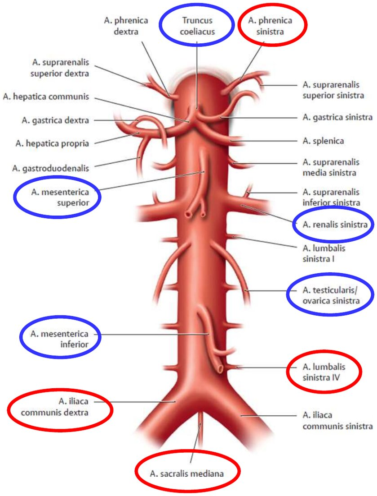

Bölüm 4 · Pars abdominalis aortae
Aorta abdominalis'in dalları sınavda genellikle "yanlış olan hangisidir" sorularıyla sınanır. Şıklar bir arteri yanlış organla eşleştirir. Bu yüzden her dal için üç bilgi yeterlidir: hangi düzeyde çıktığı, kaç tane olduğu ve neyi beslediği. Bu bölüm dalları gruplarına göre bir tabloda toplar, sonra sindirim kanalının üç tek dalını ve böbreküstü bezinin arterlerini ayrıntılı anlatır.
Pars abdominalis aortae, aorta descendens'in T12 vertebra cisminin alt kenarı ile L4 vertebra cismi arasındaki bölümüdür. Hiatus aorticus'tan karına girer, vertebra cisimlerinin önünde ve hafifçe orta hattın solunda iner. Sağında v. cava inferior bulunur. L4'te, orta hattın biraz solunda, iki a. iliaca communis'e ayrılır (bifurcatio aortae). Dalları üç gruptur ve sunum her dalın kaç tane olduğunu parantez içinde verir:
| Grup | Dal (sayı) · düzey |
|---|---|
| Visseral | Truncus coeliacus (1) · T12 alt kenarı |
| A. mesenterica superior (1) · L1 | |
| A. suprarenalis media (2) · SMA düzeyi | |
| A. renalis (2) · L2 | |
| A. testicularis / ovarica (2) · a. renalis'in biraz altı | |
| A. mesenterica inferior (1) · L3 | |
| Parietal | A. phrenica inferior (2) · truncus coeliacus'un hemen üstü |
| Aa. lumbales (4 çift = 8) · arka yüz | |
| A. sacralis mediana (1) · bifurkasyonun hemen üstü | |
| Terminal | A. iliaca communis (2) · L4 |

Şekil 4.1 — Aorta abdominalis'in dalları (önden). Mavi halkalar tek ve çift visseral dalları, kırmızı halkalar parietal ve terminal dalları işaretler.
Tek visseral dallar ön yüzden çıkar ve embriyolojik bağırsak bölgelerine karşılık gelir: truncus coeliacus ön bağırsağı (özofagusun alt ucundan duodenumun ortasına kadar, karaciğer, pankreasın bir kısmı ve dalak), a. mesenterica superior orta bağırsağı, a. mesenterica inferior arka bağırsağı besler. Çift visseral dallar yan yüzden retroperitoneal organlara (böbreküstü bezi, böbrek, gonad) gider. Parietal dallar karın duvarına ve diyaframa dağılır.
Truncus coeliacus aortanın hiatus aorticus'tan geçtikten sonra T12'nin alt kenarı düzeyinde önden verdiği ilk daldır. Kısa bir gövdedir ve hemen üç dala ayrılır:
Midenin iki kurvaturunda iki arter halkası bulunur. Küçük kurvaturda a. gastrica sinistra (truncus coeliacus) ile a. gastrica dextra (a. hepatica communis), büyük kurvaturda a. gastroomentalis sinistra (a. splenica) ile a. gastroomentalis dextra (a. gastroduodenalis) birleşir.
A. mesenterica superior truncus coeliacus'un 1-2 cm altından, L1 düzeyinde çıkar. Duodenumun üst kısmı hariç bütün ince bağırsağı, çekumu, kolon ascendens'i ve kolon transversum'un sağ 2/3'ünü besler. Dalları: a. pancreaticoduodenalis inferior (r. anterior ve posterior, yukarıdaki superior arterle birleşir), aa. jejunales ve ileales, a. ileocolica (a. caecalis anterior ve posterior, a. appendicularis, ileal ve kolik dallar), a. colica dextra ve a. colica media.
A. mesenterica inferior L3 düzeyinde çıkar. Kolon transversum'un sol 1/3'ünü, kolon descendens'i, kolon sigmoideum'u ve rektumun büyük kısmını besler. Üç dalı vardır: kolon transversum'un sol 1/3'ü ve kolon descendens için a. colica sinistra, kolon sigmoideum ve kolon descendens'in alt kısmı için aa. sigmoideae (3 adet) ve rektumun üst kısmını besleyen a. rectalis superior. A. rectalis superior aşağıda a. rectalis media (a. iliaca interna'dan) ve a. rectalis inferior (a. pudenda interna'dan) ile anastomoz yapar.
Rektumun üç arteri üç ayrı kaynaktan gelir. Üst kısmı a. mesenterica inferior'un devamı olan a. rectalis superior, orta kısmı a. iliaca interna'nın a. rectalis media'sı, alt kısmı ve canalis analis'i a. pudenda interna'nın a. rectalis inferior'u besler. "A. mesenterica inferior rektumun alt kısmını besler" ifadesi bu yüzden yanlıştır (2024-2025). Aynı soruda doğru olarak verilen ifadeler şunlardır: truncus coeliacus dalak, mide ve karaciğeri besler. Aorta thoracica'nın akciğeri besleyen dalları (rr. bronchiales) vardır. A. renalis böbreği ve a. suprarenalis inferior ile böbreküstü bezini besler. A. mesenterica superior'un çekum ve apendiksi besleyen dalları (a. ileocolica'dan) vardır.
A. marginalis coli (Drummond arteri) a. ileocolica, a. colica dextra, a. colica media, a. colica sinistra ve aa. sigmoideae'nin en üst dallarının kolon kenarı boyunca birleşmesiyle oluşan arter kemeridir. Klinik önemi şudur: truncus coeliacus ve a. mesenterica superior tıkansa bile a. mesenterica inferior'daki kan bu kemer boyunca tersine akarak tıkalı arterlerin beslediği organların beslenmesini sürdürebilir.
Böbreküstü bezi üç kaynaktan beslenir (2023-2024 S10):
Üç arter bezin yüzeyinde birbiriyle anastomoz yapar. Truncus coeliacus ve a. mesenterica superior bezi beslemez. A. renalis sunuma göre L2 düzeyinde çıkar. Aorta orta hattın solunda olduğu için sağ a. renalis soldakinden uzundur ve v. cava inferior'un arkasından geçer. A. testicularis a. renalis'in biraz altında aortanın ön yüzünden çıkar, erkekte canalis inguinalis'ten geçerek skrotuma ulaşır. Kadında a. ovarica lig. suspensorium ovarii içinde over'e gelir ve tuba uterina'ya dallar verir. Gonadların karın arka duvarından inmesi, arterlerinin neden böbrek düzeyinden çıktığını açıklar.
Parietal dallar. A. phrenica inferior truncus coeliacus'un hemen üstünden bir çift olarak çıkar, diyaframın alt yüzünü besler ve aa. suprarenales superiores'i verir. Medial dalı a. musculophrenica ve a. pericardiacophrenica ile, lateral dalı alt interkostal arterler ve a. musculophrenica ile anastomoz yapar. Aa. lumbales aortanın arka yüzünden çıkan dört çift daldır, r. dorsalis ve r. spinalis verir ve interkostal, subkostal, iliolumbal ve epigastrik arterlerle anastomoz yapar. A. sacralis mediana bifurkasyonun hemen üstünde arka yüzden çıkar, sakrumun önünde iner, a. sacralis lateralis ile anastomoz yapar ve a. lumbalis ima'yı verir.
Doğru: E. Böbreküstü bezi a. phrenica inferior'dan çıkan aa. suprarenales superiores, doğrudan aortadan çıkan a. suprarenalis media ve a. renalis'ten çıkan a. suprarenalis inferior ile beslenir.
A yanlış: truncus coeliacus ve a. mesenterica superior sindirim kanalının arterleridir. B, C ve D eksiktir: her biri üç kaynaktan yalnızca bir ya da ikisini sayar.
Doğru: B. A. mesenterica inferior'un son dalı a. rectalis superior rektumun üst kısmını besler. Alt kısım ve canalis analis a. pudenda interna'nın a. rectalis inferior'undan beslenir.
A doğrudur: a. splenica, a. gastrica sinistra ve a. hepatica communis bu üç organı besler. C doğrudur: rr. bronchiales akciğerin besleyici damarlarıdır. D doğrudur: a. renalis a. suprarenalis inferior'u verir. E doğrudur: a. ileocolica çekal arterleri ve a. appendicularis'i verir.
Doğru: D. A. splenica truncus coeliacus'un en kalın dalıdır ve pankreasın üst kenarı boyunca kıvrıntılı olarak dalağa gider.
A yanlış: a. gastrica sinistra en küçük daldır. B yanlış: a. hepatica communis orta büyüklükteki daldır. C ve E yanlış: bunlar truncus coeliacus'un doğrudan dalları değil, a. hepatica communis'in dallarıdır.
Doğru: A. A. hepatica communis'in dalı a. gastroduodenalis duodenumun arkasından inerken a. gastroomentalis dextra'yı verir. Bu arter büyük kurvatur boyunca sola giderek a. gastroomentalis sinistra ile birleşir.
B yanlış: a. splenica büyük kurvaturun sol yarısına giden a. gastroomentalis sinistra'yı verir. C yanlış: a. gastrica dextra küçük kurvaturdadır. D yanlış: SMA mideye dal vermez. E yanlış: a. hepatica propria karaciğere gider.
Doğru: C. A. mesenterica superior'un son dalı a. ileocolica çekal arterleri, ileal ve kolik dalları ve a. appendicularis'i verir.
A yanlış: a. colica media kolon transversum'a gider. B yanlış: a. colica dextra kolon ascendens'e gider. D yanlış: IMA kolonun sol tarafını besler. E yanlış: a. iliaca interna pelvis organlarını besler, apendiks orta bağırsaktan gelişir ve SMA ile beslenir.
Doğru: B. A. marginalis coli kolon kenarı boyunca a. ileocolica, a. colica dextra, media, sinistra ve aa. sigmoideae'nin dallarını birleştiren arter kemeridir. Sunumun vurguladığı klinik önem budur: kan bu kemer boyunca IMA'dan SMA alanına doğru akabilir.
A yanlış: a. rectalis media rektumun orta kısmındadır, kolon kenarındaki kollateral yol değildir. C yanlış: a. sacralis mediana sakrumun önünde iner. D yanlış: aa. lumbales karın arka duvarına gider. E yanlış: a. phrenica inferior diyafram ve böbreküstü bezi arteridir.
Doğru: E. Parietal dallar a. phrenica inferior, aa. lumbales ve a. sacralis mediana'dır. Karın duvarına ve diyaframa giderler.
A, B ve C yanlış: bunlar retroperitoneal organlara giden çift visseral dallardır. D yanlış: IMA tek visseral daldır.